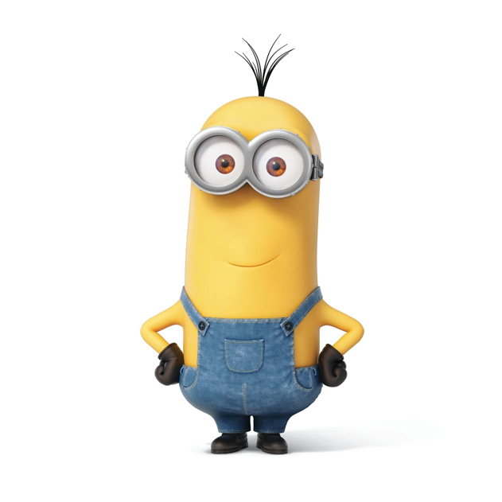

yousookang@cca.edu
510-525-3525
San Francisco, CA
Typography is a tool of communication.
It must be communication in its most intense form.
The emphasis must be on absolute clarity since this distinguishes the character of our own writing from that of ancient pictographic forms.
Our intellectual relationship to the world is individual-exact (e.g.,this individual-exact relationship is in a state of transition toward a collective-exact orientation).
This is in contrast to the ancient individual-amorphous and later collective-amorphous mode of communication.